E001 · baseline
Meghna IP, ping checks, Backend A logs and stop; no listener after stop
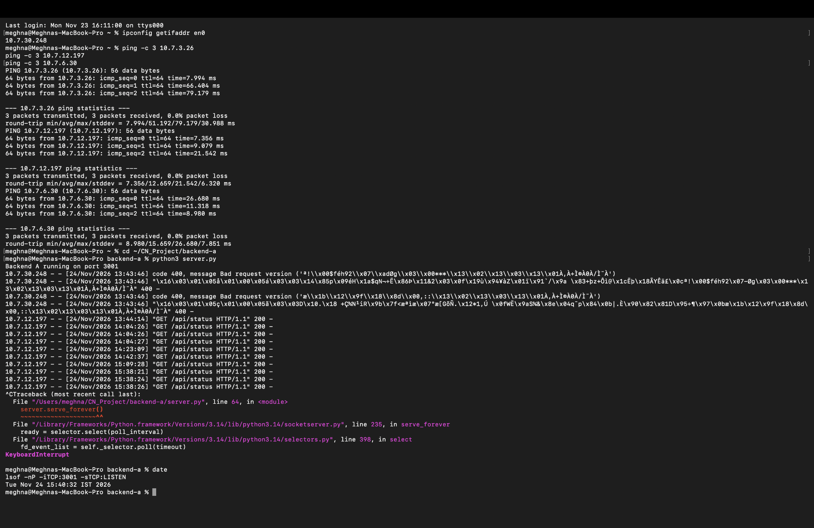
Screenshot 2026-11-24 at 3.40.58 PM.png
SHA-256 ecc9b512f207cf96ad07c4e3c4675835d185ef69ba8572895aaf114d9dec799124 November 2026 · 57 originals · Click an image to open full resolution. E036/E037 are identical uploads. Captions describe observations, not additional test results.
Index · Provenance and hashes · 32-frame capture
Meghna IP, ping checks, Backend A logs and stop; no listener after stop

Screenshot 2026-11-24 at 3.40.58 PM.png
SHA-256 ecc9b512f207cf96ad07c4e3c4675835d185ef69ba8572895aaf114d9dec7991Backend A restarted after stopped-listener check
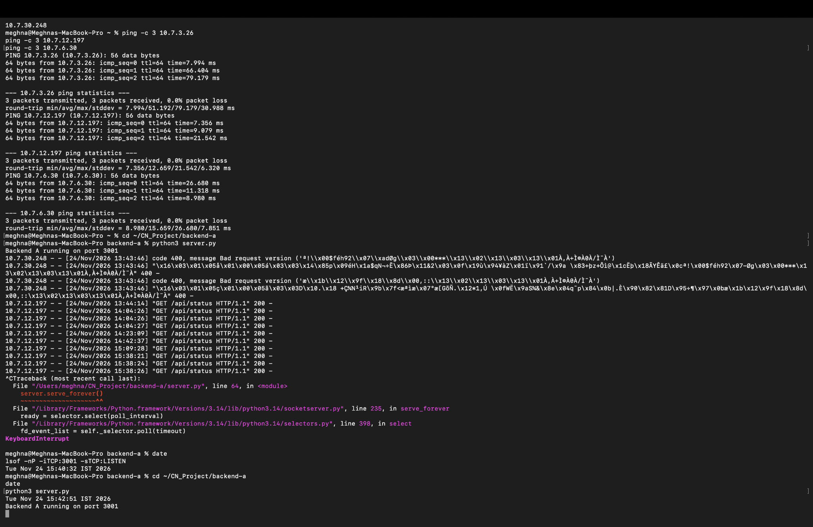
Screenshot 2026-11-24 at 3.42.59 PM.png
SHA-256 dae0c7456bccf7f4b973f6172477bb18a7283405e3abcb838a945cb797f8a9b1PF initial disabled state and original rules
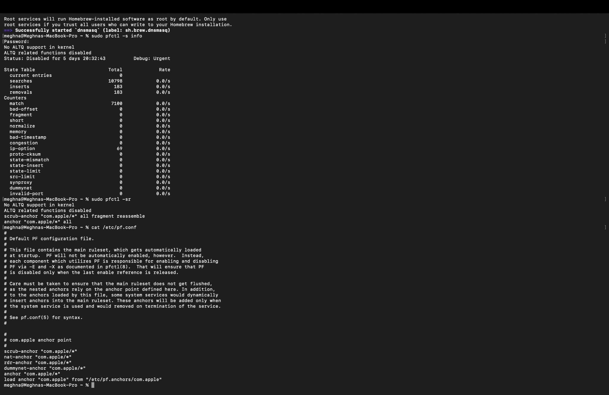
Screenshot 2026-11-24 at 3.49.59 PM.png
SHA-256 6bc9a25f98490ea1890908a979ce9b3a78f4d6a6ba171eab2abba983f35b6522PF backup, edge allow/client block rules, syntax validation
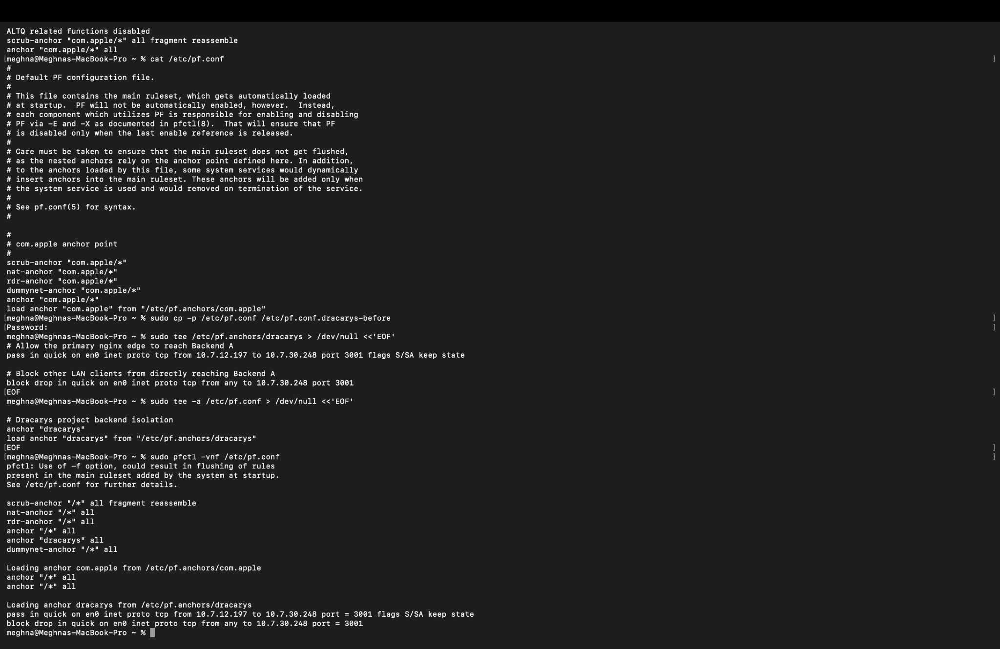
Screenshot 2026-11-24 at 6.14.22 PM.png
SHA-256 590100de7a4030c764f2248917ff4aaac995e824bfa5b128a378948fcddad245PF enabled and dracarys anchor rules displayed
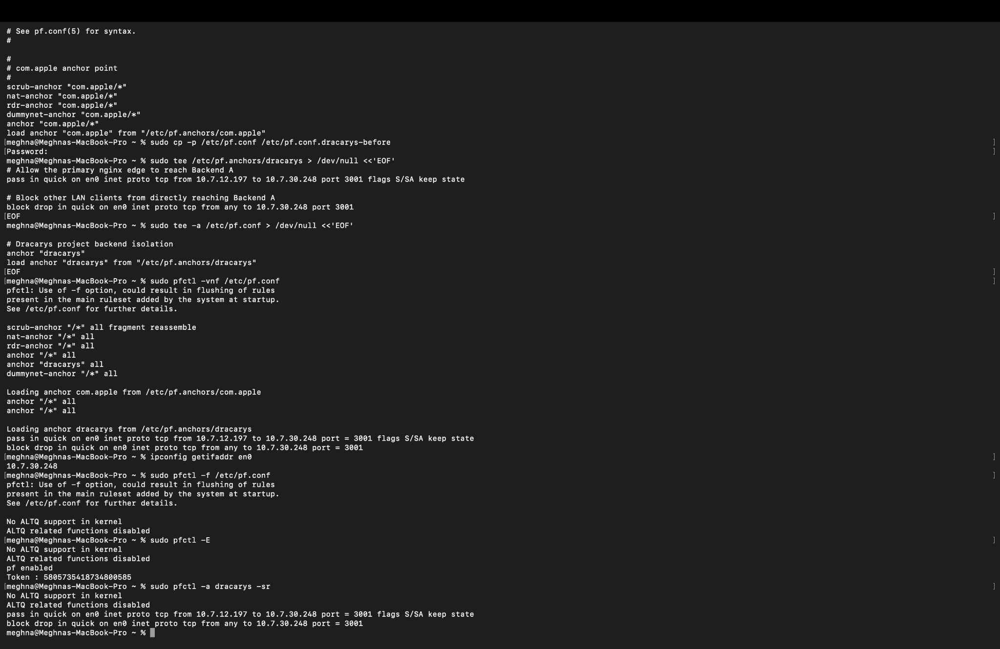
Screenshot 2026-11-24 at 6.18.34 PM.png
SHA-256 203f6c1b5617af30ac32028f189caf33016e506ef748dc007118eab06d885ed0Pre-install nginx/listener check on Meghna Mac
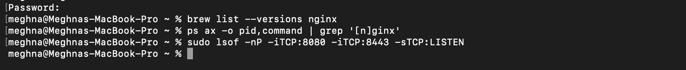
Screenshot 2026-11-24 at 6.46.58 PM.png
SHA-256 b3e4cb0c1fb71caa40a6ecbfe257c1f7e1f52e59e9caa5a639e8f470dbe03976Standby nginx installation, CSR and matching certificate/key modulus hashes
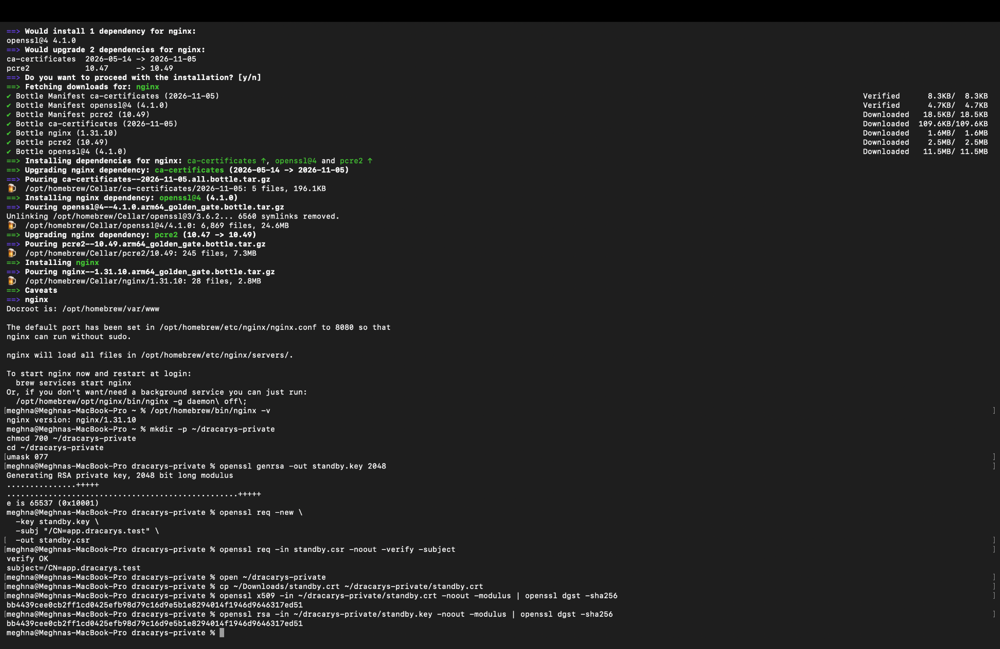
Screenshot 2026-11-24 at 6.58.47 PM.png
SHA-256 996863f0c31c3b1ff4d2d5e6db85b08797bf286d583d044ce9df5bb2bef73e01Standby nginx full configuration and successful syntax/start
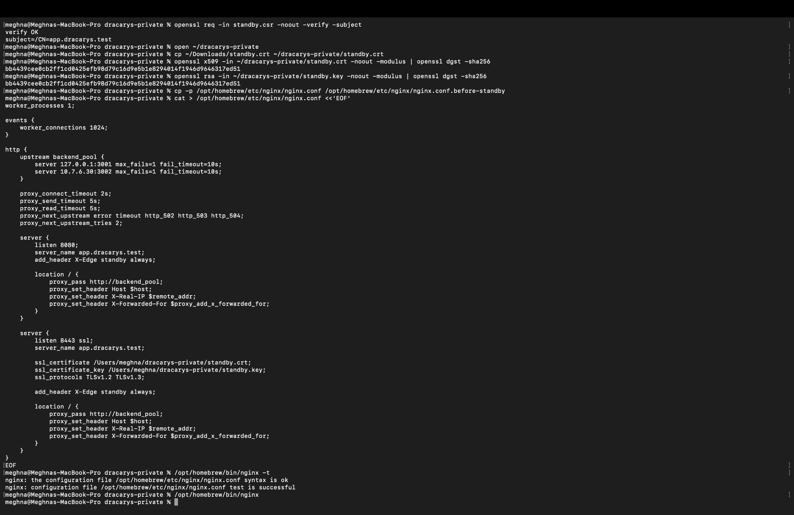
Screenshot 2026-11-24 at 7.00.31 PM.png
SHA-256 e1333d1e4a289576cf1e98c5d94f885750fffad1707496166f536ebfc4f6b1bbBackup TTL 120 change; temporary differing resolver answers
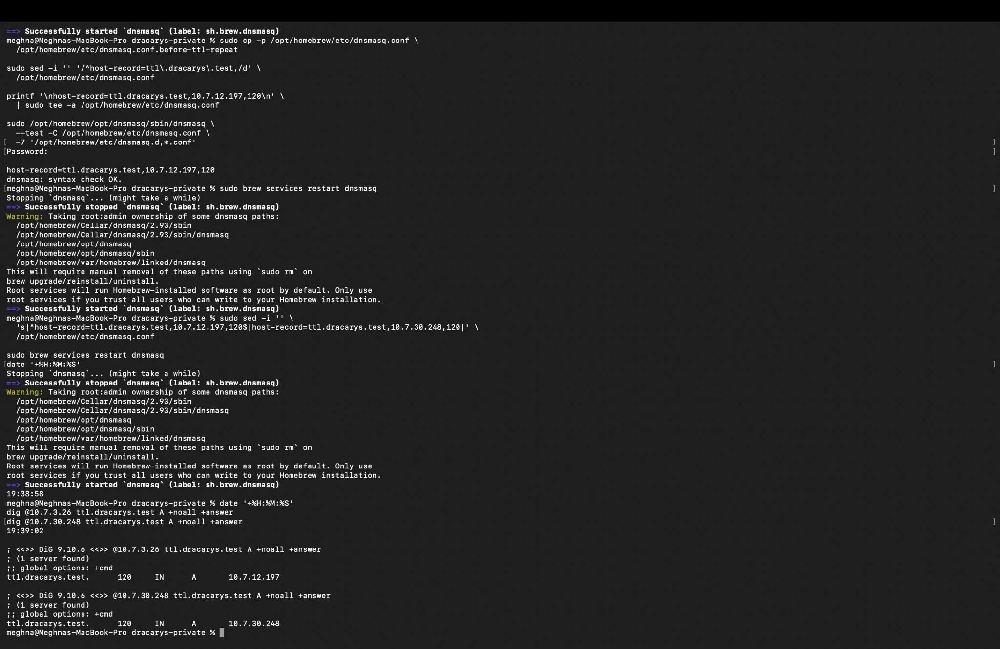
Screenshot 2026-11-24 at 7.39.04 PM.png
SHA-256 8ef211597b7c1171440747f1dee39c63938b661d062fd67752fd7b3af7fcef1ePF configuration restored, anchor cleared and PF disabled
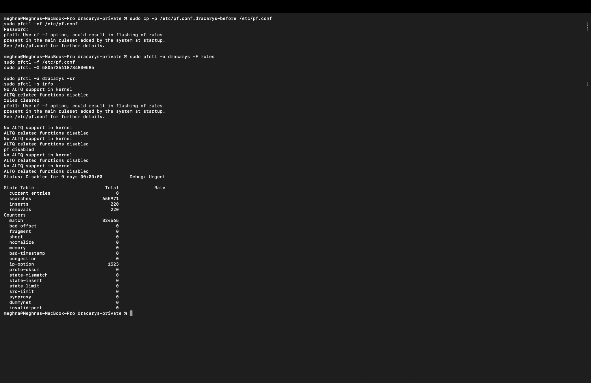
Screenshot 2026-11-24 at 8.09.06 PM.png
SHA-256 1ee8092d0e10c2ff7e1ef08c6cd3c59d65a75fac1bab926ce4da69cae187a2abEarly TTL 30 system-resolver loop returning old IP
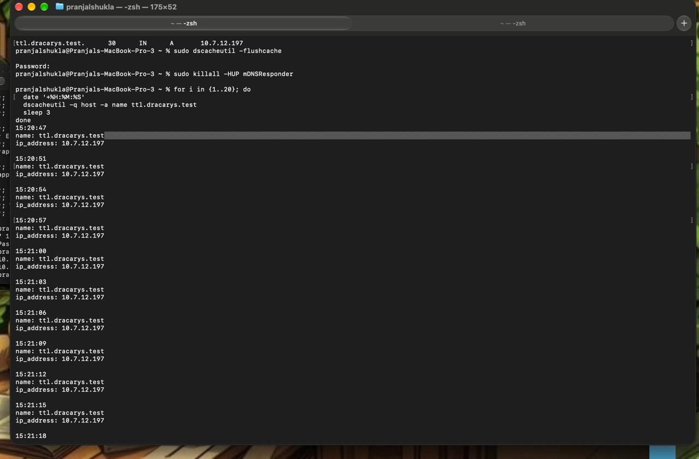
WhatsApp Image 2026-11-24 at 15.30.25.jpeg
SHA-256 4a89298f70b80133bcb121545a07059f67bea980475ad86baccc3d92dfccfa7cBackup DNS response and both Wi-Fi DNS servers configured
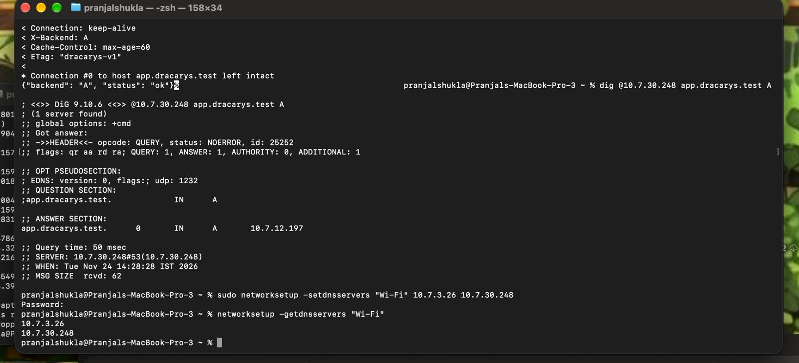
WhatsApp Image 2026-11-24 at 15.31.17.jpeg
SHA-256 256f4cf14528a776f9b7393ae8701ca7ef06aed2ea572244065dab0980700d68Early TTL 30 new answers from both resolvers and system lookup
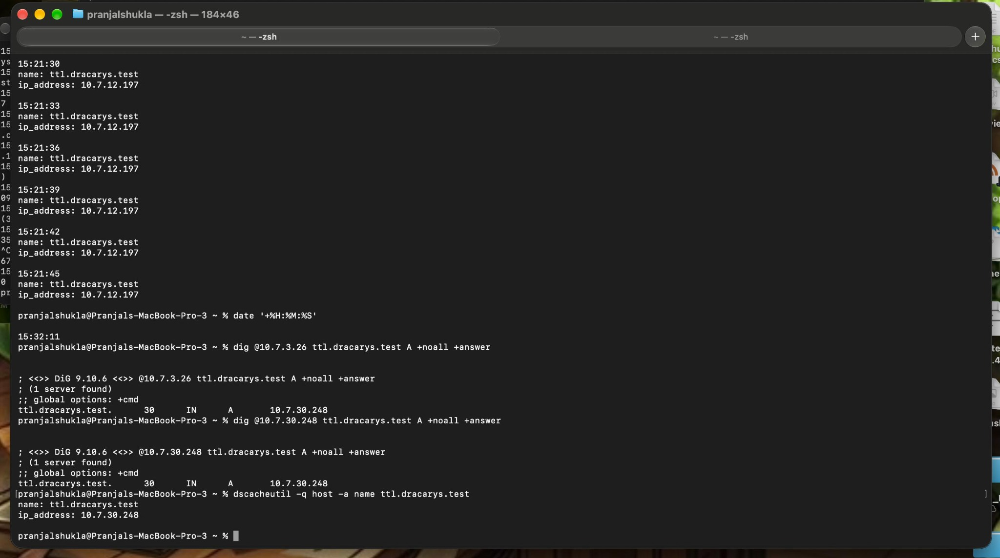
WhatsApp Image 2026-11-24 at 15.33.25.jpeg
SHA-256 5b640f2b99405848977bb7a56f24a309cee304fb55dbb557a194b0f3bf9fecb4Early manual flush after answer already changed; weaker than E050
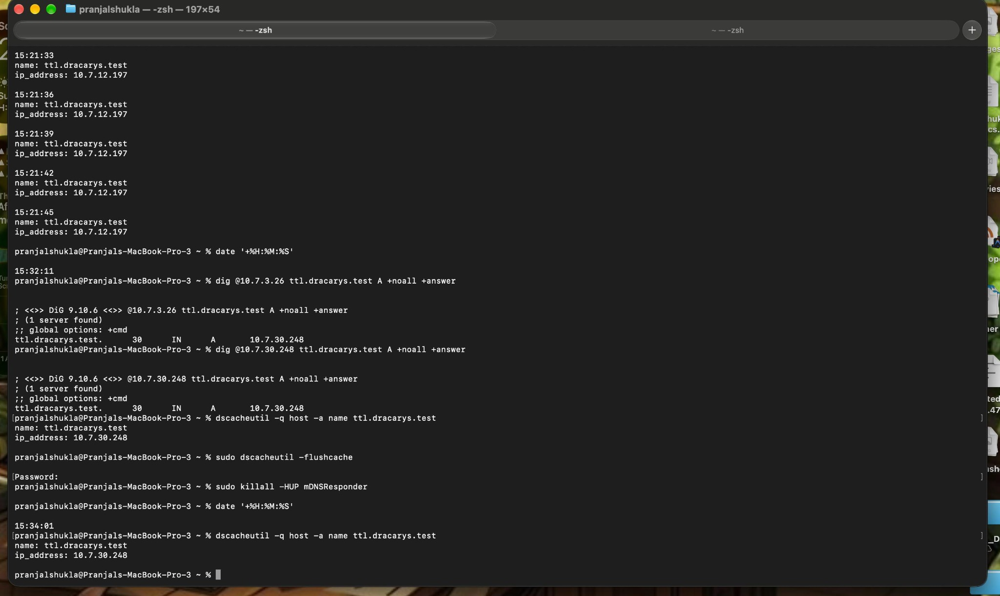
WhatsApp Image 2026-11-24 at 15.35.06.jpeg
SHA-256 5c900dbf32a39fd5a6dcfdd3366816fc455c0192c7400682347214ed1235402dPrimary nginx passive-failure/retry configuration and syntax validation
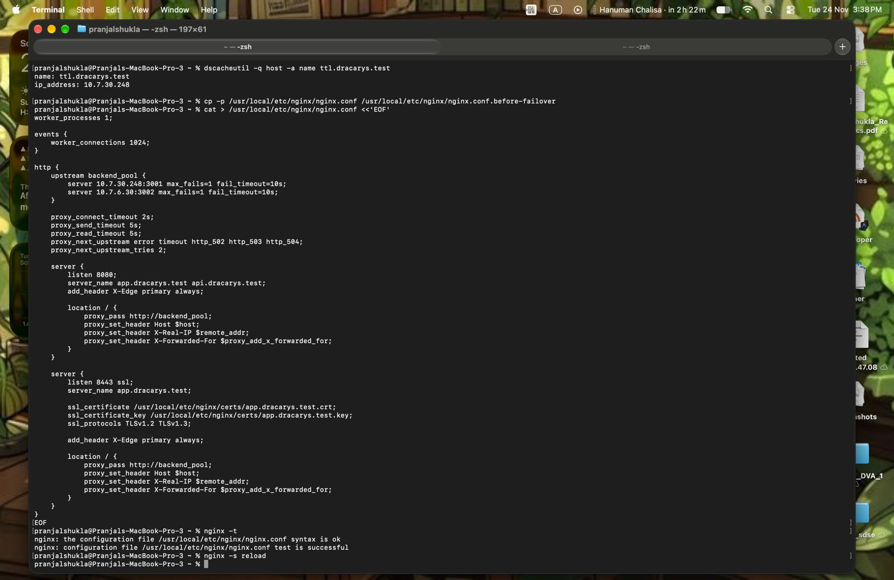
WhatsApp Image 2026-11-24 at 15.38.12.jpeg
SHA-256 3060eb348bcd8413b034d097f4b52f49fc0241453c3975d5522b35fb96056676Baseline six A/B HTTP 200 responses via primary
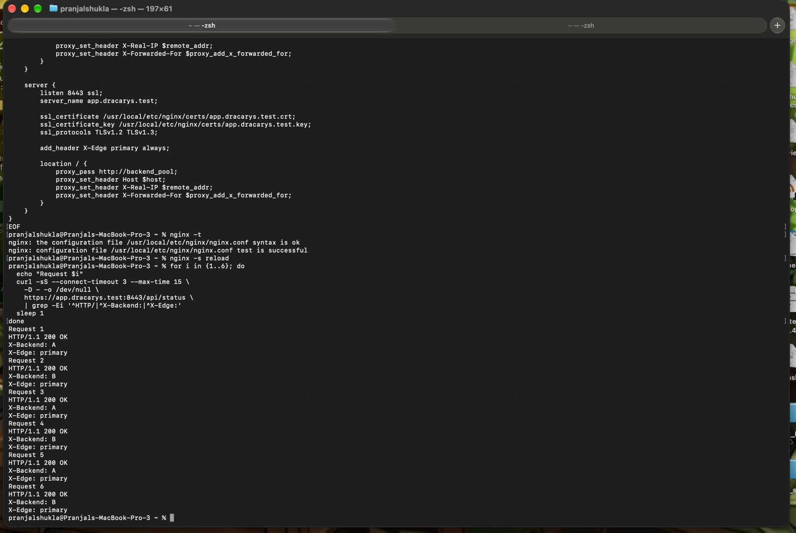
WhatsApp Image 2026-11-24 at 15.39.40.jpeg
SHA-256 b9ca5dcb75832cbbb1690f62421cdbed9a8156490c170fe0d0774711ec46fd92Ten B-only HTTP 200 responses during A outage
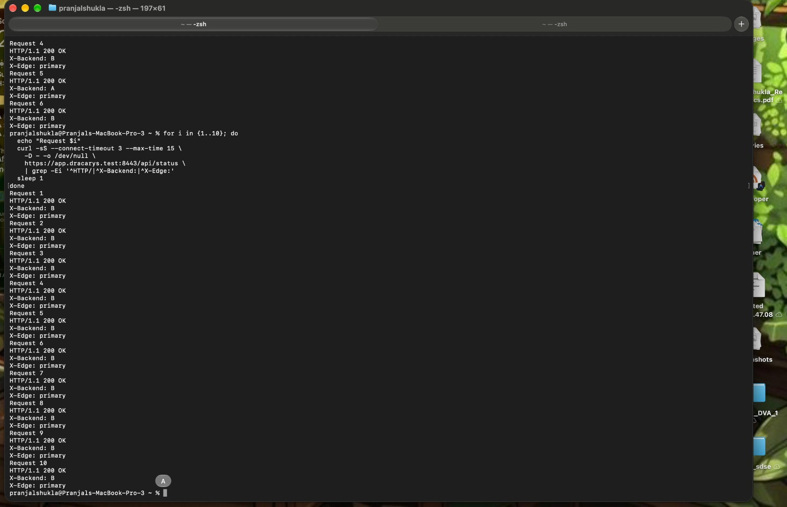
WhatsApp Image 2026-11-24 at 15.42.07.jpeg
SHA-256 8fd449a4781862cf6569d5527196e1efeff031330d27c3dc92ed3e2b5974e0bcRecovery loop transitions from B-only to A/B
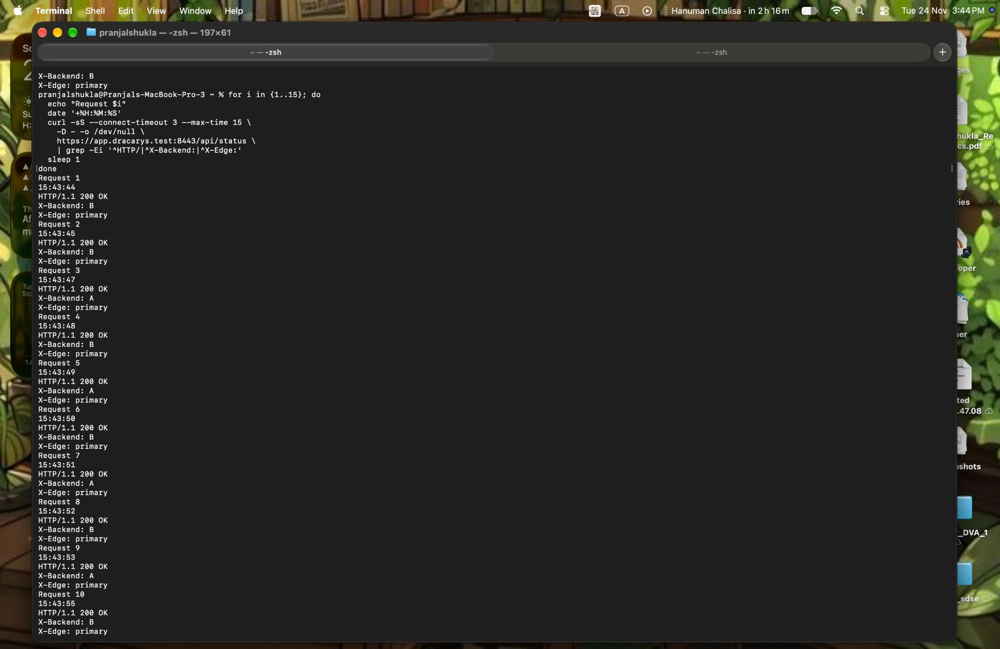
WhatsApp Image 2026-11-24 at 15.44.31.jpeg
SHA-256 916752844cd51f6ffb970b2948099cb330e2fb85f25523f9e71c9ee31acf5fa3Continuation of restored A/B load balancing
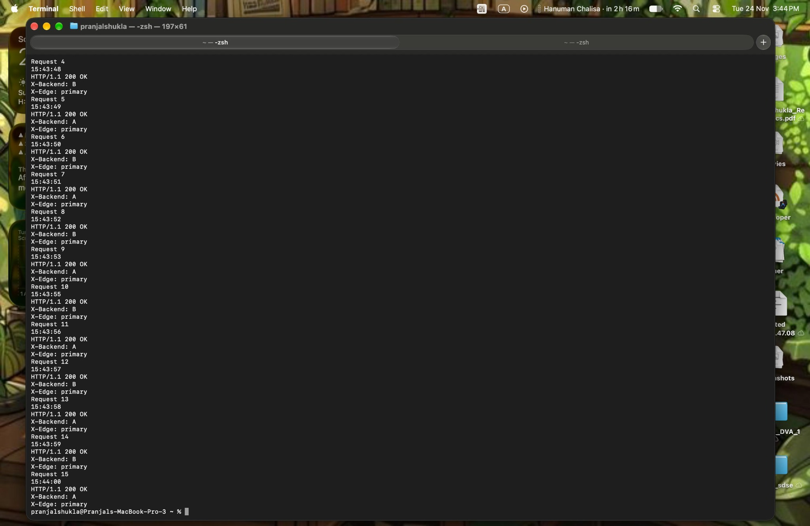
WhatsApp Image 2026-11-24 at 15.44.48.jpeg
SHA-256 002b8d00629f2db006b46fce6ea33486a767a6e3192ddcc3829cc68917e0e359DNS traffic to backup, primary-edge IP, allowed direct Backend A request
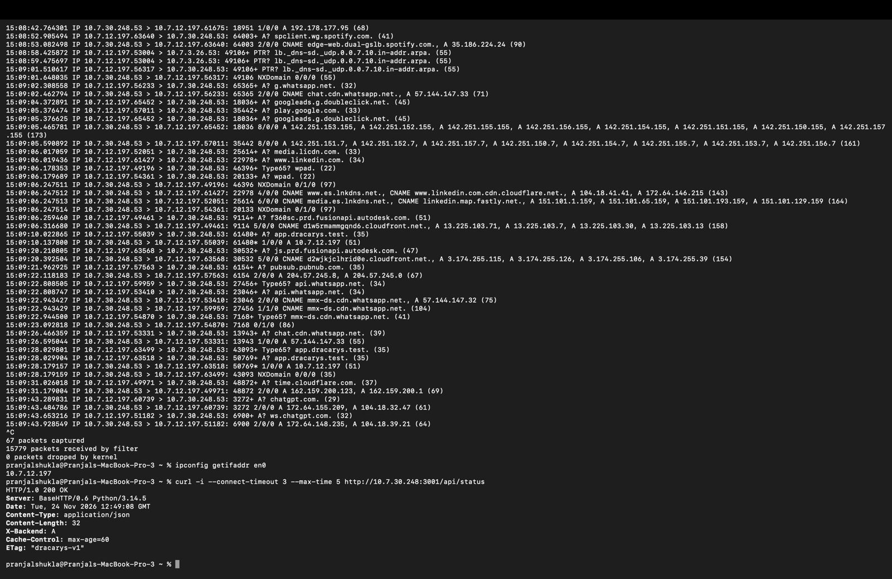
WhatsApp Image 2026-11-24 at 18.19.20.jpeg
SHA-256 0ce2e6d1792834baba62bcbd54c2c74122491be955d50fe33d6c50a12c15ef92Client direct Backend A request times out
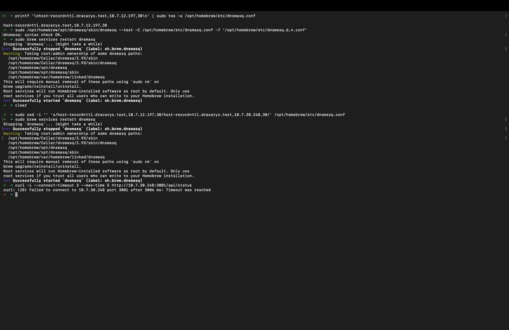
WhatsApp Image 2026-11-24 at 18.27.44.jpeg
SHA-256 26199bb760742ecb094a94d4d96e24a9d5e43ffc2691f67af1e82e3c89ce93d0Direct A blocked while HTTPS via primary succeeds
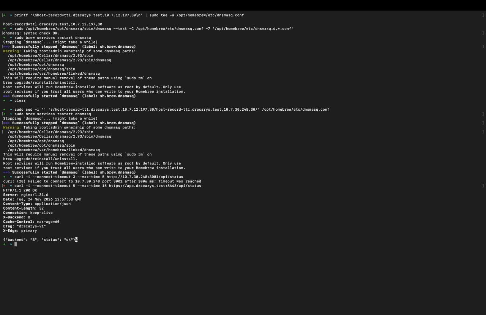
WhatsApp Image 2026-11-24 at 18.28.07.jpeg
SHA-256 68d73d77b9ce903af03d8870ee87b069e21acce7fb379510903cfbc1ba3bc57aPi IP/prefix and initial UFW/iptables/nft state
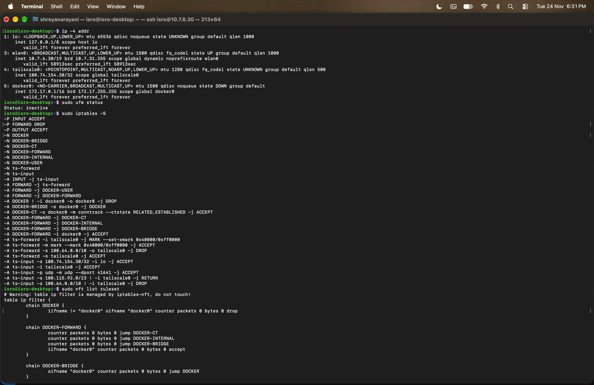
WhatsApp Image 2026-11-24 at 18.32.04.jpeg
SHA-256 f9b8c72868786cc44d1e1990d1660a049fbd4c3d320d3333ab86f0ad884e87ecPi existing nft rules, background Docker/Tailscale state
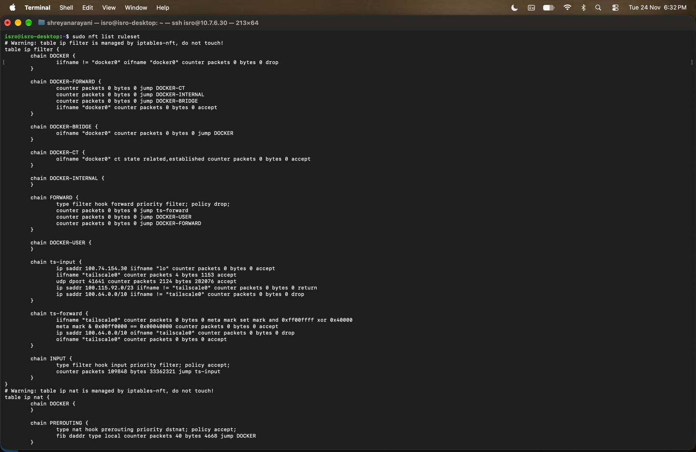
WhatsApp Image 2026-11-24 at 18.32.36.jpeg
SHA-256 3b2ed13aaf5c946bd10dbea3490c82da34ec1115c3d127b0b64204d0fe9685ecContinuation of existing Pi firewall state
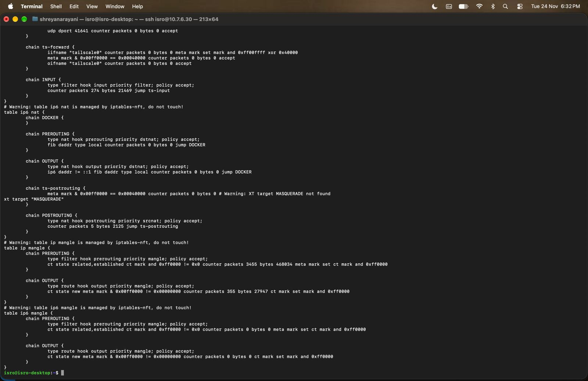
WhatsApp Image 2026-11-24 at 18.32.37 (1).jpeg
SHA-256 59454416edc1f925011726817576c524bc746ddb2b484f22affe9c390124fda1Continuation of existing Pi NAT/IPv6 state
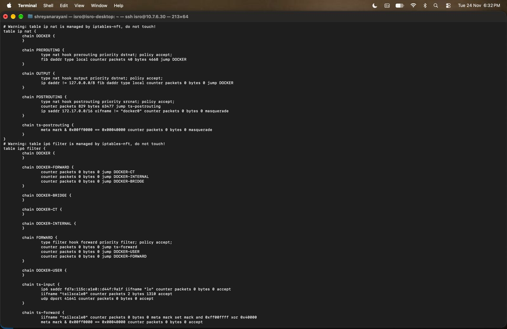
WhatsApp Image 2026-11-24 at 18.32.37.jpeg
SHA-256 0c3b454664cf401e13a5a725bb3960c4257105ec6a4eb83c5ba66f36bd7a1da5Primary edge direct Backend B request succeeds
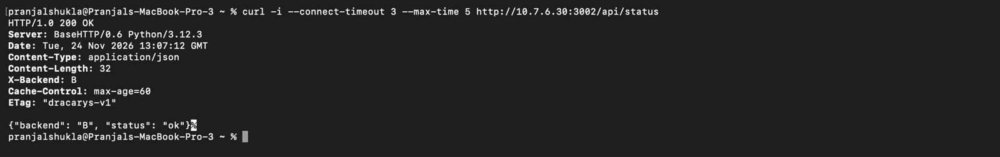
WhatsApp Image 2026-11-24 at 18.37.30.jpeg
SHA-256 3828de2e9c1030ec9627e5f0aaf1399bc7edbd0a0a47ce04ba010ba64b6321ddClient direct B times out while HTTPS succeeds
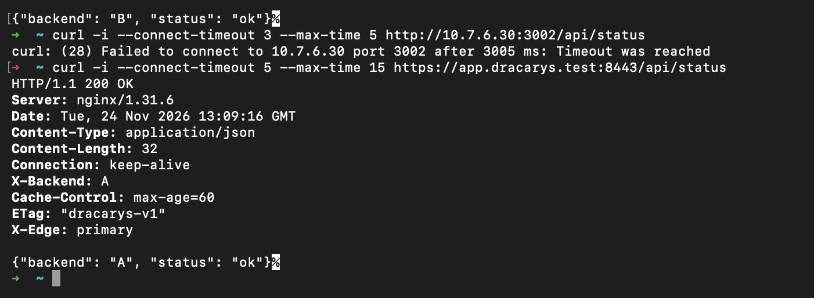
WhatsApp Image 2026-11-24 at 18.39.51.jpeg
SHA-256 441249d2e1184ab5e8218ae8cf644ae15e7b0a231b00e0210935a94b4a853d4bPi DRACARYS_BACKEND rules and accept/drop counters
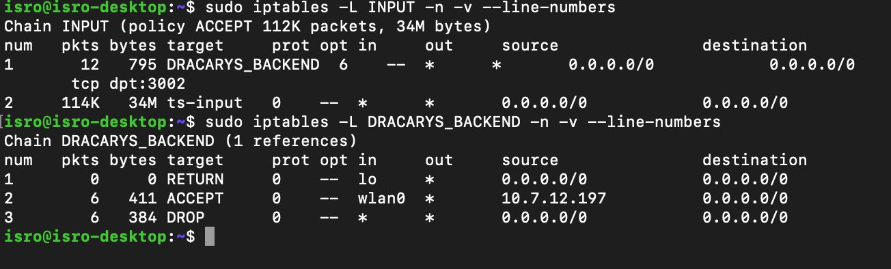
WhatsApp Image 2026-11-24 at 18.40.25.jpeg
SHA-256 6ff93dd9f999d154c7aa5becdeffd737230af7b1875615bb00b1c3908e111b01Certificate directory file listing; no key contents
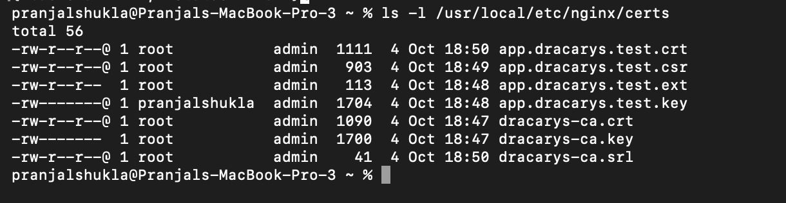
WhatsApp Image 2026-11-24 at 18.43.49.jpeg
SHA-256 e19ef38fccf1e3c29767d97e62a3b8aa708a44b0b5d064cfbf00bbd98da45a97Key permissions tightened; standby CSR signed, chain and SAN verified
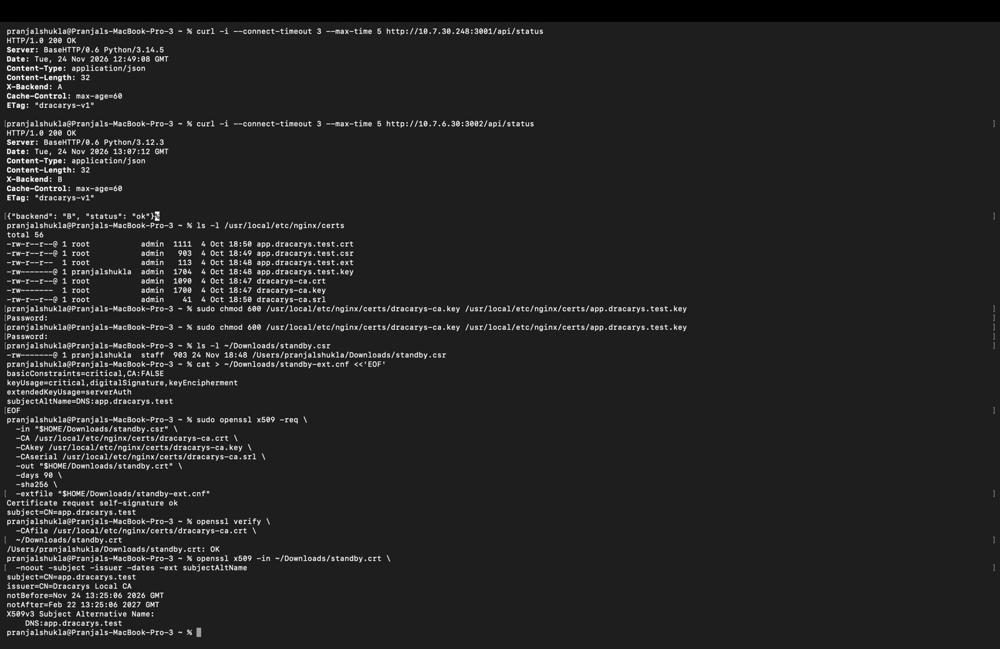
WhatsApp Image 2026-11-24 at 18.56.17.jpeg
SHA-256 a8cf4b6ba119607664c5fdabba5922b535b0441dbf698fde35fc33379573b162Standby TLS verified with --resolve; preparatory connectivity only
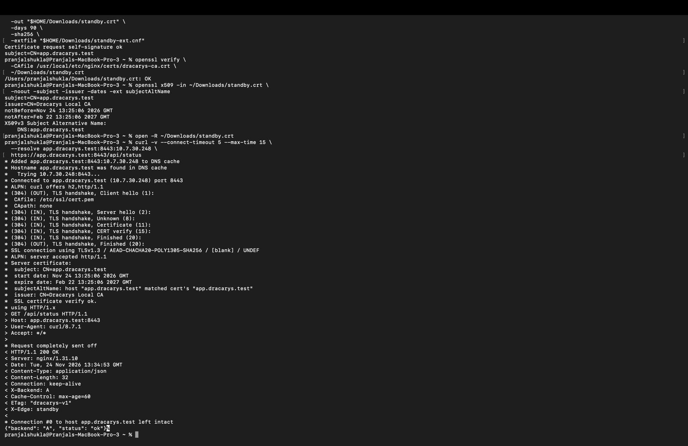
WhatsApp Image 2026-11-24 at 19.05.00.jpeg
SHA-256 91bbf3f089170f7892bd0be3c53096ec74ecc66ea4a912248830cb8b6044dd9cStandby A/B distribution using --resolve
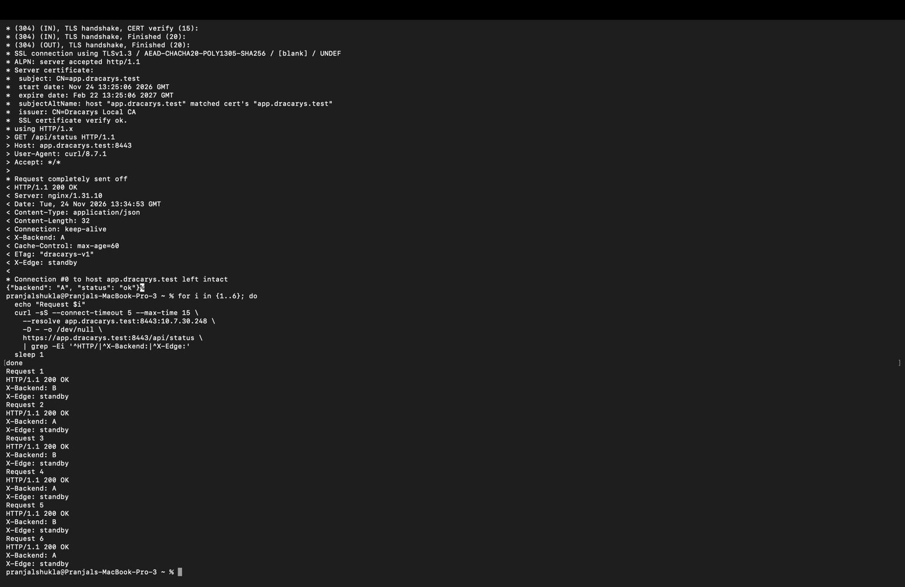
WhatsApp Image 2026-11-24 at 19.09.11.jpeg
SHA-256 e29d75aff614dae0c1fceaca62787546d37db1a2ccc9c7d254d04ecc3b5fbfaeBefore cutover both DNS answers point to primary; primary request succeeds
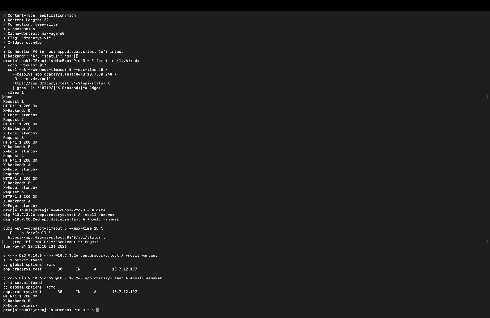
WhatsApp Image 2026-11-24 at 19.11.18.jpeg
SHA-256 d46efe46ad61574773f9a91fb8e0de6ccf647fe3d0fccc0907c415cc47aba11dBoth DNS answers changed to standby with TTL 30
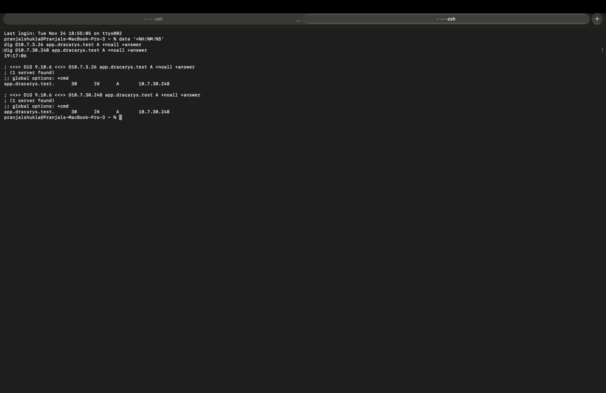
WhatsApp Image 2026-11-24 at 19.17.24.jpeg
SHA-256 2a59be6c3782c6bad298a4b3e20b218496086c6f6419d649291b8ab980c69fa1Hostname-based standby TLS and HTTP 200 without --resolve

WhatsApp Image 2026-11-24 at 19.18.40(1).jpeg
SHA-256 6da00b39ce25948652825e192671544782b1239d685341d1f837150eb6347508Duplicate upload of E036, same original bytes
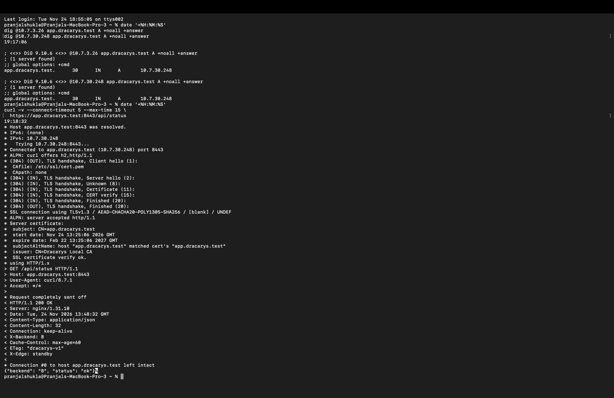
WhatsApp Image 2026-11-24 at 19.18.40.jpeg
SHA-256 6da00b39ce25948652825e192671544782b1239d685341d1f837150eb6347508Primary nginx stopped; hostname requests continue via standby A/B
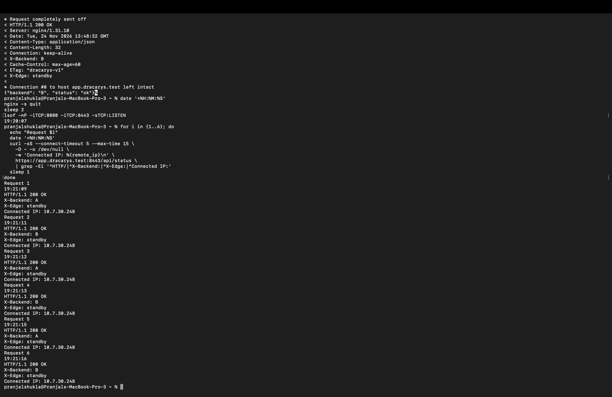
WhatsApp Image 2026-11-24 at 19.21.27.jpeg
SHA-256 9af83be22746f87388cbbc7b840423cebeabb63b0cc3568ea9dabddd75eee697Primary nginx restarted; direct --resolve TLS check
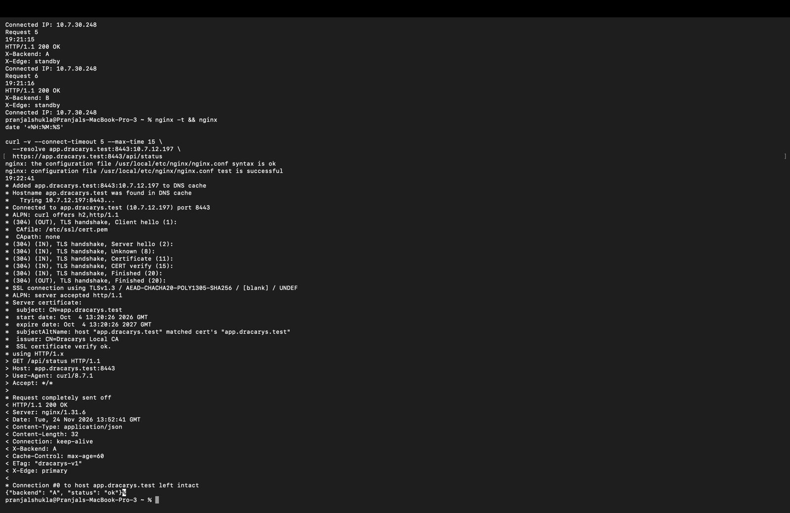
WhatsApp Image 2026-11-24 at 19.22.48.jpeg
SHA-256 a145f0c5ee5aefc701b413138e0311024c0633cdf2416d8250b86b376aecc496Rollback temporarily has inconsistent DNS answers; not cache proof alone
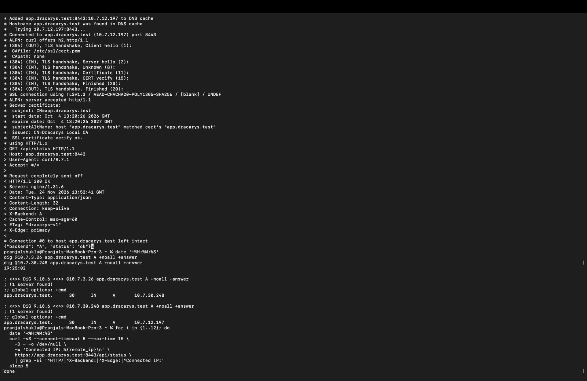
WhatsApp Image 2026-11-24 at 19.26.12.jpeg
SHA-256 5cca3aee5315962d99e94107ad1336635ce35acc16c2e07ad9d49f52c25fde56Standby requests then both DNS servers converged to primary
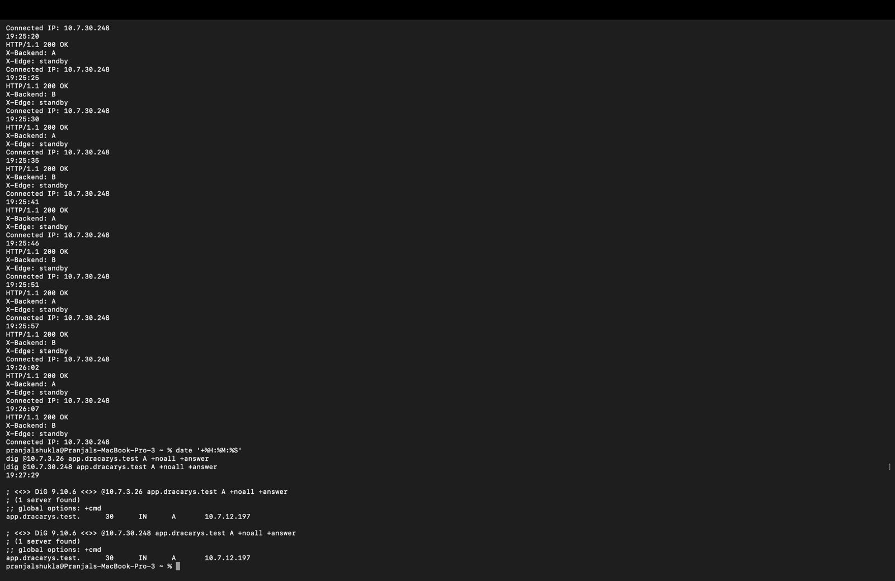
WhatsApp Image 2026-11-24 at 19.27.39.jpeg
SHA-256 aa4e5f209cb25371d4160b9cb5201ce413b6cb9a024f3077b5fac2ad0317b695Hostname requests restored to primary, both backends
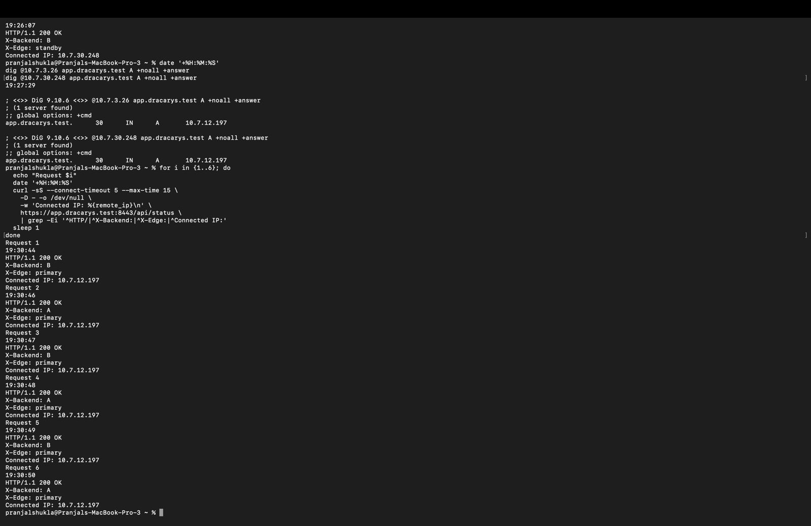
WhatsApp Image 2026-11-24 at 19.31.01.jpeg
SHA-256 e2ad3346b911790e3b53d7f831a9cc26da9068867489a5593a8b265dbb6be2a2Domain-specific resolver has both project DNS servers; host owner not visible
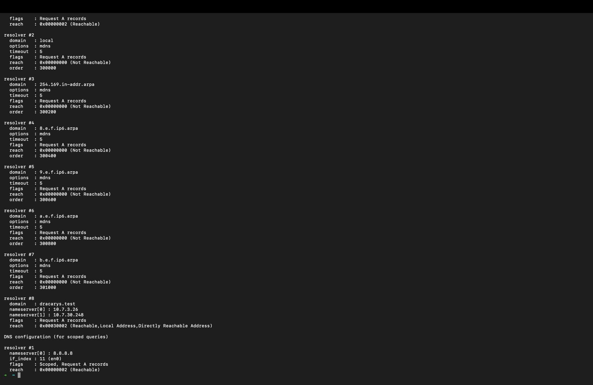
WhatsApp Image 2026-11-24 at 19.32.47.jpeg
SHA-256 f09f986b0e609ee835c63dc79e216b771138833904c4539ae4cc9c83881829cbHostname HTTPS to primary with certificate verification and HTTP 200
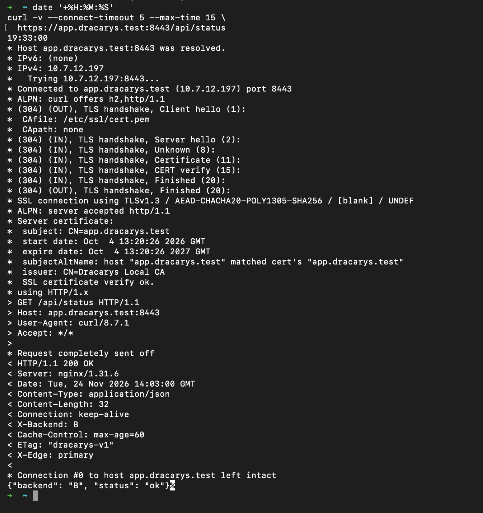
WhatsApp Image 2026-11-24 at 19.33.17.jpeg
SHA-256 539aa0de969cb9234c74c72464543e4741e061756dc2e04bb71d284ade489c3fBoth resolvers initially return primary with TTL 120
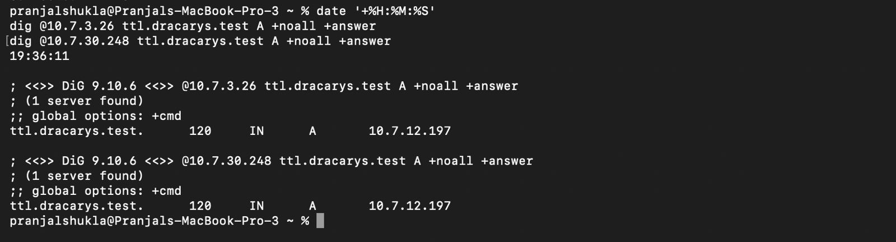
WhatsApp Image 2026-11-24 at 19.36.29.jpeg
SHA-256 09cd4c988b48161e5298659932f1ae3f31505b835d1e3df7e55bf117dced41a1System cache flushed before timed loop, old IP initially returned
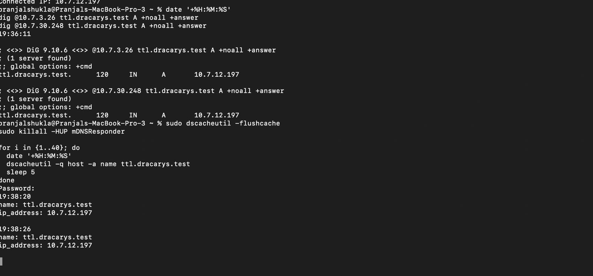
WhatsApp Image 2026-11-24 at 19.38.42.jpeg
SHA-256 96fc61ebdae5fde9f2c078d6c73f879876366c2a39ff28e6654915e4c90b7f5aPrimary record changed; both DNS servers now give new IP
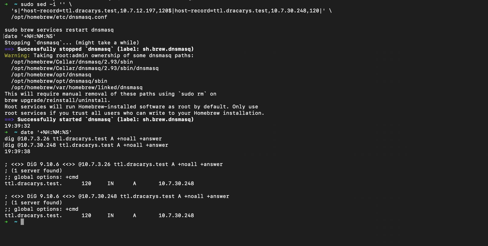
WhatsApp Image 2026-11-24 at 19.39.51.jpeg
SHA-256 4508c7fa7829db56f7469c5da472d474023d30484b29a6c35ad5fcfab26a1cadClient old answer through 19:40:52, new answer at 19:40:57
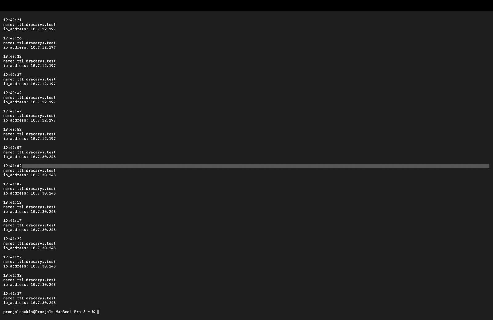
WhatsApp Image 2026-11-24 at 19.42.00 (1).jpeg
SHA-256 4f30dffab00f212de7eabd61c48f07a040bbc495cf98019685ae552e02ae9a0aEarlier portion of same timed client lookup loop
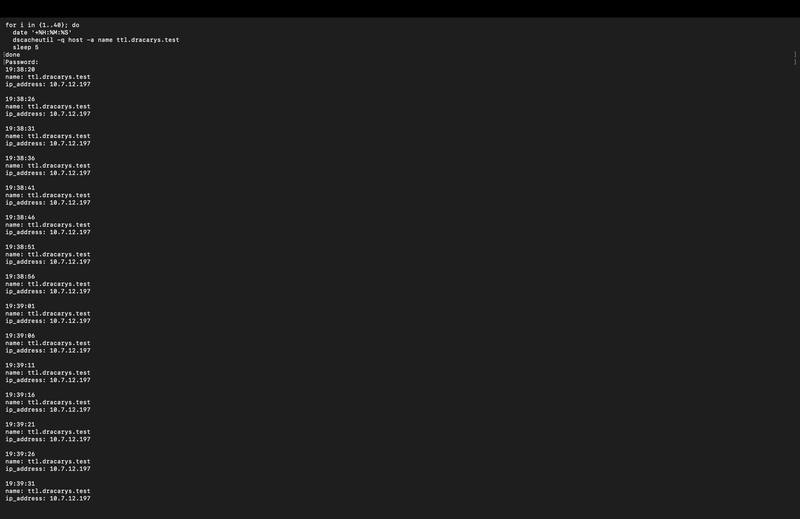
WhatsApp Image 2026-11-24 at 19.42.00.jpeg
SHA-256 832e7ba05f431471acb81ece20c06431b877e344d9b5248e13083161e35e061eManual flush changes stale cached IP immediately to current server answer
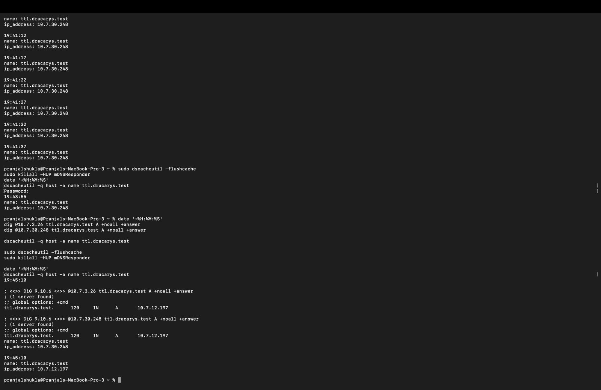
WhatsApp Image 2026-11-24 at 19.45.18.jpeg
SHA-256 63690068bbe278031903ddcfa6e58c971c7178119d980db4f12e800491986de6TTL record restored; packet capture command and completion
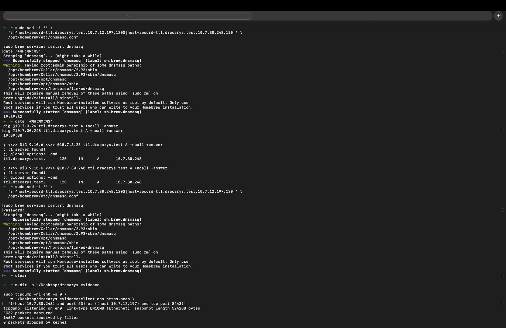
WhatsApp Image 2026-11-24 at 19.48.29.jpeg
SHA-256 c51119b934b1719db28c0abc219e2cd5a36ebc96870c8c4aa993ba3610843603Pi project firewall chain removed, existing ts-input preserved
WhatsApp Image 2026-11-24 at 20.05.52.jpeg
SHA-256 98fc6e95b4e845b1cbb8cd58a0d97ddf618e5810ba59b1a8ee2fc6556abcfbb0Post-rollback Backend B connection fails; see E055 and E054
WhatsApp Image 2026-11-24 at 20.06.10.jpeg
SHA-256 6d120d8eb593c38306e37536b55df655eccc4d46f4444260893f6ae986447dc9Backend B direct HTTP 200 after restart
WhatsApp Image 2026-11-24 at 20.07.55 (1).jpeg
SHA-256 7c004994e862ab7dfa4c6805ab954b0318a7ef52095c5e1129e7f15e9dc589e6No Backend B listener, then server.py restarted
WhatsApp Image 2026-11-24 at 20.07.55.jpeg
SHA-256 d01e7ff7195c3ba80295e100985cd66ed1715de67b23d9eb5ddf690b177f1bbcBackend A direct HTTP 200 after PF rollback
WhatsApp Image 2026-11-24 at 20.09.45.jpeg
SHA-256 753f116f55a8cf8a7e8cde6ab5040d989a7995c666de2fc51f93b934b890e511Both DNS servers target primary TTL 30; six primary A/B successes
WhatsApp Image 2026-11-24 at 20.11.29.jpeg
SHA-256 9d7643d0767b119b688b1dec9b8846ecdabf228991f1689ec3579eb24f13dabb